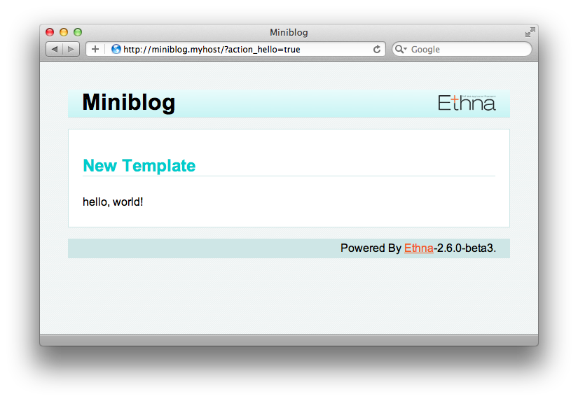

実際のアプリケーションの作成に入る前に、アクション、ビュー、テンプレートを作成してみましょう。
ここでは、下記URLでアクセスすると、画面にHello Worldが表示されるようにします。
http://miniblog.myhost/?action_hello=true
やるべきことは３つです
ethna コマンドを使ってそれぞれ作成します。
$ ethna add-action hello
file generated [/var/www/miniblog/skel/skel.action.php -> /var/www/miniblog/app/action/Hello.php]
action script(s) successfully created [/var/www/miniblog/app/action/Hello.php]
$ ethna add-view hello
file generated [/var/www/miniblog/skel/skel.view.php -> /var/www/miniblog/app/view/Hello.php]
view script(s) successfully created [/var/www/miniblog/app/view/Hello.php]
$ ethna add-template hello
file generated [/var/www/miniblog/skel/skel.template.tpl -> /var/www/miniblog/template/ja_JP/hello.tpl]
template file(s) successfully created [/var/www/miniblog/template/ja_JP/hello.tpl]
このコマンドにより、ひな形から、hello という名前のアクション、ビュー、テンプレートが作成されます。これで、 ?action_hello=true にてアクセスができるようになっているはずです。ブラウザからアクセスして確認してみましょう。
無事に、新しいアクションの画面が出力されましたね。
ここで、 Ethna の処理の流れについて説明します。 Ethna に来たリクエストは、大雑把に言えば、以下のように、アクション→ビュー→テンプレートと流れるように処理されます。

それでは、ここから、たったいま生成されたアクション・ビュー・テンプレートのそれぞれを確認してみましょう。
作成された Hello アクションファイル app/action/Hello.php を開いてみましょう。次のように2つのクラス、 Miniblog_Form_Hello と Miniblog_Action_Hello が作成されているはずです (コメント等は省略しています)。
<?php
class Miniblog_Form_Hello extends Miniblog_ActionForm
{
protected $form = array(
);
}
class Miniblog_Action_Hello extends Miniblog_ActionClass
{
public function prepare()
{
return null;
}
public function perform()
{
return 'hello';
}
}
このクラスは、 アクションクラス です。Helloアクションの実装と、遷移先（ビュークラス）の決定をします。 prepare() メソッドや preform() メソッドにおける return は、ビュークラス名にあたります。作成したてのこのファイルでは perform() メソッドでは、文字列の 'hello' が返されることにより、次に Hello ビュー が実行されることを表します。
続いて、ビュークラス app/view/Hello.php を確認してみましょう。
<?php
class Miniblog_View_Hello extends Miniblog_ViewClass
{
public function preforward()
{
}
}
このクラスは、 ビュークラス です。Helloビューにおける表示項目の設定などを行います。その他にも、HTTPヘッダの設定やテンプレートの設定などの役割もあります。
次に、テンプレート template/ja_JP/hello.tpl を確認してみます。
<h2>New Template</h2>
<p>hello, world!</p>
作成されたテンプレートは、これだけが記述された状態です。
寄り道をしてしまいましたが、 Ethna の処理の流れがおおまかに理解できたでしょうか。これからアプリケーションの実装を行っていきます。
3. アプリケーションの実装 に進んでください。